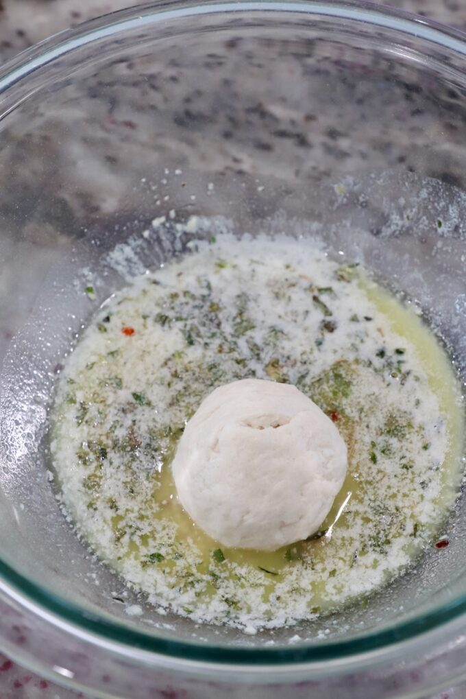

Oven-Baked Pizza Dip
เมนูทานเล่นสุดอร่อย ทำง่าย ชีสยืดสะใจ!

Instructions (วิธีทำ)
- วอร์มเตาอบที่อุณหภูมิ 180 องศาเซลเซียส
- เกลี่ยครีมชีสลงที่ก้นชามอบให้ทั่ว
- ทาซอสพิซซ่าทับลงไปบนครีมชีสให้ทั่วถึง
- โรยมอสซาเรลล่าชีส และวางเปปเปอโรนีตกแต่งด้านบน
- นำเข้าเตาอบประมาณ 15-20 นาที จนชีสละลายเป็นสีเหลืองทอง
- เสิร์ฟพร้อมขนมปังกระเทียม หรือแครกเกอร์
